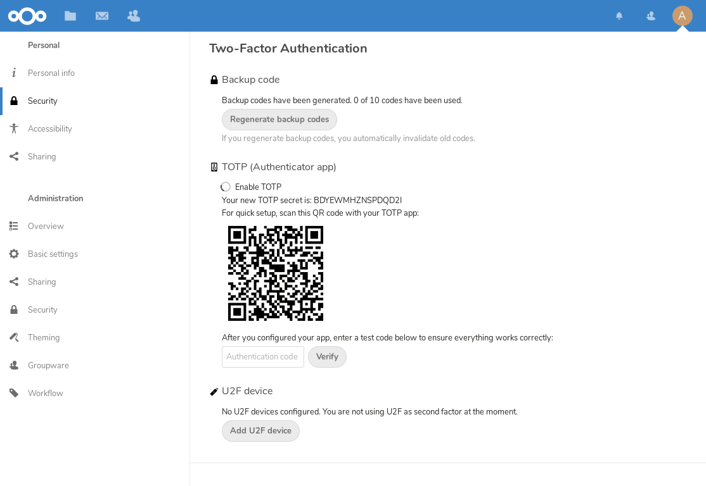

Χρήση ελέγχου ταυτότητας δύο παραγόντων
Ο έλεγχος ταυτότητας δύο παραγόντων (2FA) είναι ένας τρόπος προστασίας του λογαριασμού σας στο Nextcloud από μη εξουσιοδοτημένη πρόσβαση. Λειτουργεί απαιτώντας δύο διαφορετικά «αποδεικτικά στοιχεία» της ταυτότητάς σας. Για παράδειγμα, * κάτι που γνωρίζετε * (όπως κωδικός πρόσβασης) και * κάτι που έχετε * σαν φυσικό κλειδί. Συνήθως, ο πρώτος παράγοντας είναι ένας κωδικός πρόσβασης όπως έχετε ήδη και ο δεύτερος μπορεί να είναι ένα μήνυμα κειμένου που λαμβάνετε ή ένας κωδικός που δημιουργείτε στο τηλέφωνό σας ή σε άλλη συσκευή (* κάτι που έχετε *). Το Nextcloud υποστηρίζει μια ποικιλία 2ων παραγόντων και μπορούν να προστεθούν περισσότεροι.
Μόλις ενεργοποιηθεί η εφαρμογή ελέγχου ταυτότητας δύο παραγόντων από τον διαχειριστή σας, μπορείτε να την ενεργοποιήσετε και να τη διαμορφώσετε στο: doc: `userpreferences». Παρακάτω μπορείτε να δείτε πώς.
Διαμόρφωση ελέγχου ταυτότητας δύο παραγόντων
In your Personal Settings look up the Second-factor Auth setting. In this example this is TOTP, a Google Authenticator compatible time-based code:

Θα δείτε το μυστικό σας και έναν κωδικό QR που μπορείτε να σαρώσετε από την εφαρμογή TOTP στο τηλέφωνό σας (ή σε άλλη συσκευή). Ανάλογα με την εφαρμογή ή το εργαλείο, πληκτρολογήστε τον κωδικό ή σαρώστε το QR και η συσκευή σας θα εμφανίζει έναν κωδικό σύνδεσης που αλλάζει κάθε 30 δευτερόλεπτα.
Κωδικοί ανάκτησης σε περίπτωση που χάσετε τον 2ο παράγοντα
You should always generate backup codes for 2FA. If your 2nd factor device gets stolen or is not working, you will be able to use one of these codes to unlock your account. It effectively functions as a backup 2nd factor. To get the backup codes, go to your Personal Settings and look under Second-factor Auth settings. Choose Generate backup codes:

You will then be presented with a list of one-time-use backup codes:

Πρέπει να βάλετε αυτούς τους κωδικούς σε ασφαλές σημείο, κάπου μπορείτε να τους βρείτε. Μην τα συνδυάσετε με τον 2ο παράγοντα, όπως το κινητό σας τηλέφωνο, αλλά βεβαιωθείτε ότι εάν χάσετε το ένα, έχετε ακόμα το άλλο. Η διατήρησή τους στο σπίτι είναι ίσως το καλύτερο πράγμα.
Σύνδεση με έλεγχο ταυτότητας δύο παραγόντων
After you have logged out and need to log in again, you will see a request to enter the TOTP code in your browser. If you enable not only the TOTP factor but another one, you will see a selection screen on which you can choose two-factor method for this login. Select TOTP:

Τώρα, απλώς εισαγάγετε τον κωδικό σας:

Εάν ο κωδικός ήταν σωστός, θα ανακατευθυνθείτε στον λογαριασμό σας στο Nextcloud.
Σημείωση
Δεδομένου ότι ο κώδικας βασίζεται στο χρόνο, είναι σημαντικό το ρολόι του διακομιστή και του smartphone σας να είναι σχεδόν συγχρονισμένο. Η μετατόπιση χρόνου λίγων δευτερολέπτων δεν θα είναι πρόβλημα.
Χρήση ελέγχου ταυτότητας δύο παραγόντων με διακριτικά υλικού
Μπορείτε να χρησιμοποιήσετε έλεγχο ταυτότητας δύο παραγόντων με βάση διακριτικά υλικού. Οι ακόλουθες συσκευές είναι γνωστό ότι λειτουργούν:
Με βάση το TOTP:
Με βάση το FIDO U2F:
Χρήση εφαρμογών πελάτη με έλεγχο ταυτότητας δύο παραγόντων
Μόλις ενεργοποιήσετε το 2FA, οι πελάτες σας δεν θα μπορούν πλέον να συνδεθούν μόνο με τον κωδικό πρόσβασής σας, εκτός εάν έχουν επίσης υποστήριξη για έλεγχο ταυτότητας δύο παραγόντων. Για να το λύσετε, θα πρέπει να δημιουργήσετε κωδικούς πρόσβασης για συγκεκριμένες συσκευές. Ανατρέξτε στο: doc: session_management για περισσότερες πληροφορίες σχετικά με το πώς να το κάνετε αυτό.
Considerations
If you use WebAuthn to login to your Nextcloud be sure to not use the same token for 2FA. As this would mean you are again only using a single factor.